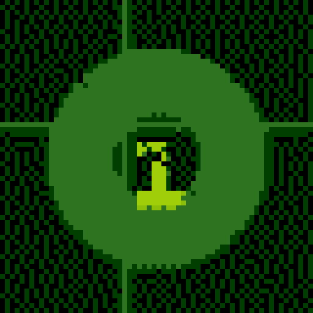
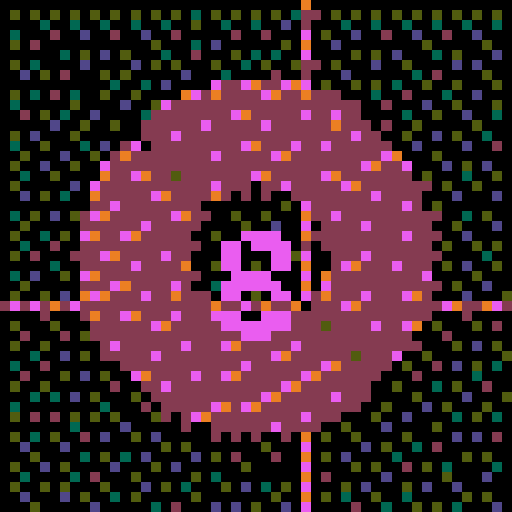
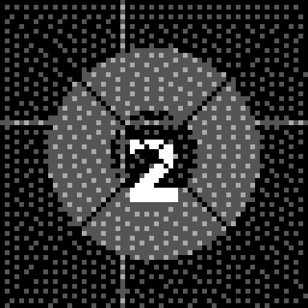
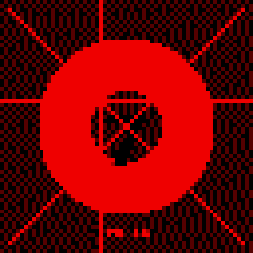
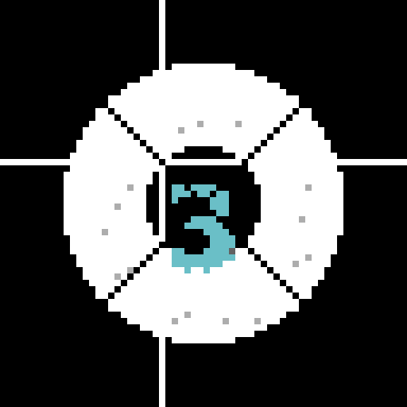
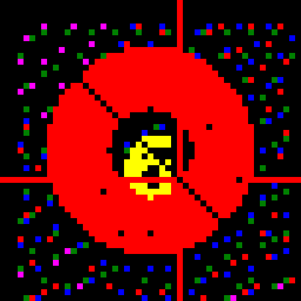
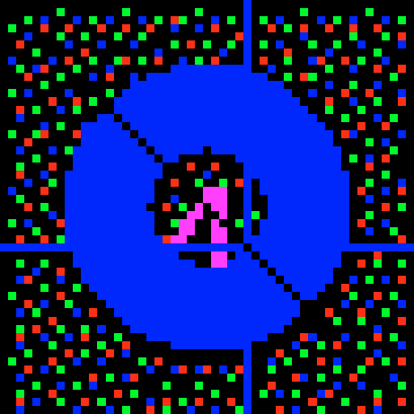
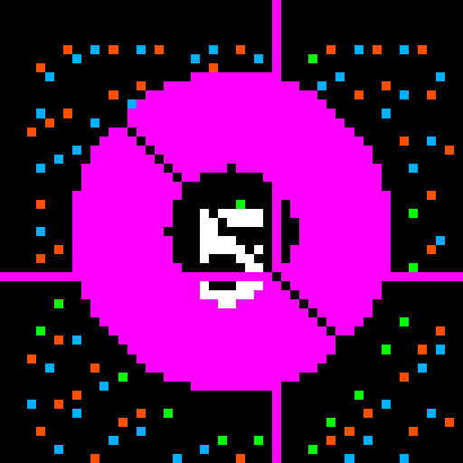

DemonUttunulTypeXenodemonMesh36RegionPlexAbyssal boundary — the circuit's terminus and origin folded into one.
Cross-addition: 3::6 (Warp) + 3::6 (Warp) = 9 → Plex. The vortex collapses into the abyss through self-addition. The syzygy of absolute closure — 9::0 Uttunul closes the numogram.
1 :: 8 — SURGEcurrent 7 · Murrumur

1 · STABILITY
gl · + · GAMEBOY_ORIGINAL
⟳
7
surge

8 · MULTIPLICITY
mnm · − · APPLE_II_LO
DemonMurrumurTypeChronodemonMesh28RegionTime-CircuitFirst pair — the initiating current that sets the circuit in motion.
Cross-addition: 5::4 (Sink) + 7::2 (Hold) = 1::8 (Surge). The largest current (7) drives the Time-Circuit rotor anticlockwise. Stability and Multiplicity: the grid's seed and its fractal bloom.
2 :: 7 — HOLDcurrent 5 · Oddubb

2 · SEPARATION
dt · − · GAMEBOY_POCKET
⟳
5
hold

7 · BLOOD
pb · + · GAMEBOY_VIRTUALBOY
DemonOddubbTypeChronodemonMesh20RegionTime-CircuitMiddle pair — separation creates the wound; blood flows through it.
Cross-addition: 5::4 (Sink) + 1::8 (Surge) → 7::2 (Hold). Separation's stutter-fracture and Blood's organic pulse: wound and flow, bound by Oddubb. The Hold current (5) is the torque that keeps the circuit in tension.
3 :: 6 — WARPcurrent 3 · Djynxx

3 · RELEASE
zx · + · C64
⟲
3
self-fold

6 · ABSTRACTION
tch · − · TELETEXT
DemonDjynxxTypeXenodemonMesh12RegionWarpChaotic outer-time vortex. Self-folding loop. The current reinforces itself.
Cross-addition: 5::4 (Sink) + 7::2 (Hold) = 3::6 (Warp). The Warp is a consequence of Sink + Hold — it doesn't need to be placed independently. Triangular by nature: T₂=3, T₃=6. The 1-3-6 orbit of triangular numbers IS the Warp current.
4 :: 5 — SINKcurrent 1 · Katak

4 · CATASTROPHE
skr · − · ZX_SPECTRUM
⟳
1
sink

5 · PRESSURE
ktt · + · APPLE_II_HI
DemonKatakTypeChronodemonMesh00RegionTime-CircuitUnifying spark. The Sink at the bottom pulls everything down.
Cross-addition: Sink + Hold → Warp. Sink + Surge → Warp (again). Primary generative syzygy: 4::5 Katak is the initiating spark of the entire Time-Circuit. Cross-add with any other pair; you always get a canonical result. The most arithmetic syzygy.